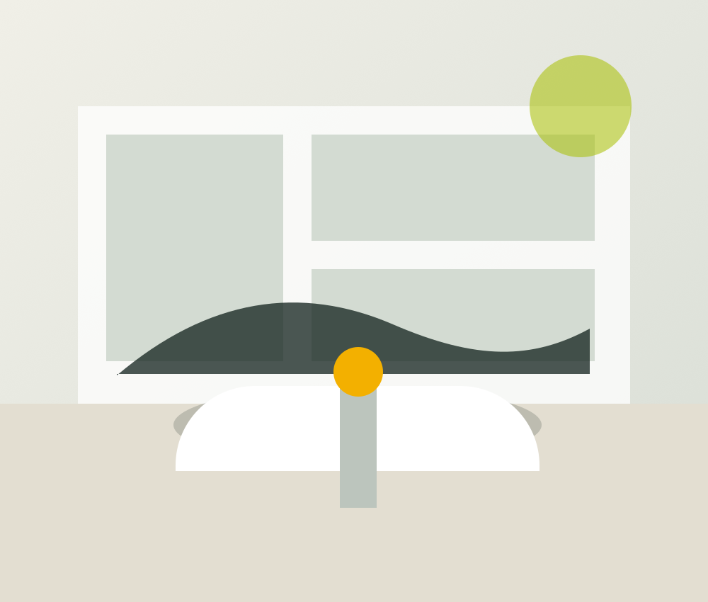

Transparenz
Behandlungen werden verständlich erklärt – ohne unnötige Fachsprache.
Unsere Arbeit verbindet moderne Behandlungsmethoden mit einem klaren Ziel: gesunde Zähne möglichst lange zu erhalten und Entscheidungen nachvollziehbar zu machen.
Nach einer ausführlichen Untersuchung erstellen wir gemeinsam mit Ihnen ein Behandlungskonzept. Dabei berücksichtigen wir medizinische Notwendigkeit, Zahnerhalt, Funktion, Ästhetik und Ihre persönliche Situation.
Neue Erkenntnisse der zahnmedizinischen Forschung und minimalinvasive Techniken werden dort eingesetzt, wo sie einen klaren medizinischen Nutzen bieten.

ZMK Grünenplan · PraxisMedizinische Qualität und ein verlässlicher Umgang gehören für uns zusammen.
Behandlungen werden verständlich erklärt – ohne unnötige Fachsprache.
Es gibt selten nur einen Weg. Gemeinsam wählen wir eine medizinisch sinnvolle Lösung.
Zahnhartsubstanz und natürliche Strukturen sollen möglichst bewahrt werden.
Zahnarzt · ZMK Grünenplan
Qualifikationen und Teamangaben sollten vor der Veröffentlichung mit den aktuellen Praxisunterlagen abgeglichen und bei Bedarf ergänzt werden.